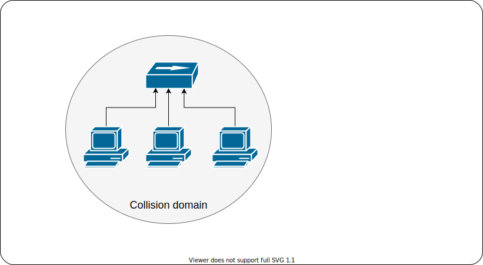
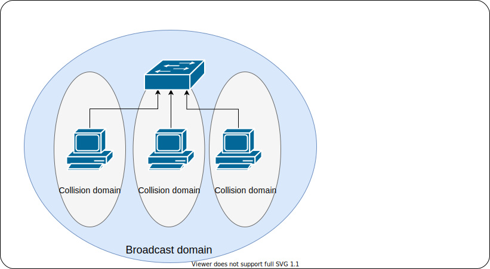
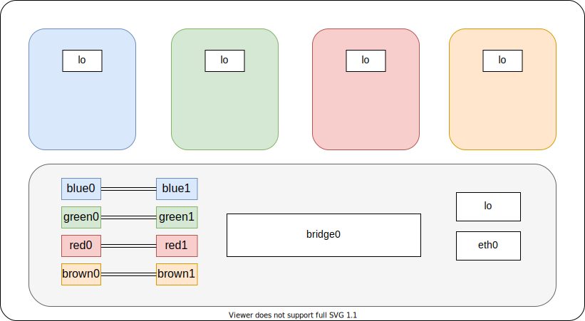
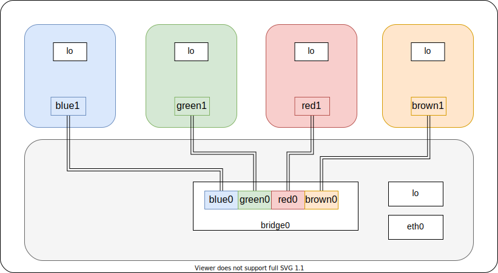
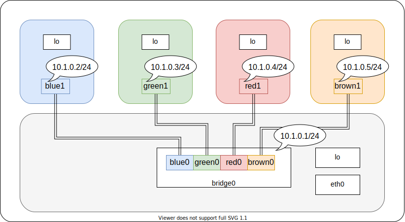

clone(), unshare(), setns(), /proc/<pid>/ns/)veth: a pair of 2 interconnected network interfaces - a pipe.veth pairAt the end of the workshop you learn:
veth pairsA collision domain is a network segment connected by a shared medium.
The collision domain applies particularly in wireless networks, but also affected early versions of Ethernet.
A network collision occurs when more than one device attempts to send a packet on a network segment at the same time.

A network bridge is a computer networking device that creates a single network from multiple network segments.
In a bridged network communication between two hosts is possible without "flooding". Bridges reduce collisions by creating a separate collision domain per interface (port).
A multiport bridge is often called network switch.

For each received ethernet frame the switch learns from the frame's source MAC address and adds this together with an port identifier to the forwarding information base (FIB).
When bridge receives a frame it searches for the frame's destination address (MAC) in FIB to forward (or send) the frame to the exactly one port.
If the destination address is unknown the switch sends the frame out on all ports (except the ingress port).
A Linux bridge is a piece of software used to interconnect two or more network segments.
A Linux bridge behaves like a network switch. It forwards packets between interfaces that are connected to it. It's usually used for forwarding between VMs and network namespaces on a host.
A Linux bridge is more powerful than a pure hardware bridge because it can also filter and shape traffic.
Tools to configure linux bridges:
Usage: brctl [commands]
commands:
addbr <bridge> add bridge
delbr <bridge> delete bridge
addif <bridge> <device> add interface to bridge
delif <bridge> <device> delete interface from bridge
hairpin <bridge> <port> {on|off} turn hairpin on/off
setageing <bridge> <time> set ageing time
setbridgeprio <bridge> <prio> set bridge priority
setfd <bridge> <time> set bridge forward delay
sethello <bridge> <time> set hello time
setmaxage <bridge> <time> set max message age
setpathcost <bridge> <port> <cost> set path cost
setportprio <bridge> <port> <prio> set port priority
show [ <bridge> ] show a list of bridges
showmacs <bridge> show a list of mac addrs
showstp <bridge> show bridge stp info
stp <bridge> {on|off} turn stp on/off
Create or delete a bridge
brctl addrb bridge0 # create bridge0
brctl delrb bridge0 # delete bridge0
Add or remove bridge interfaces
brctl addif bridge0 veth0 # add veth0 to bridge0
brctl delif bridge0 veth0 # delete veth0 from bridge0
Show current bridge / interfaces configuration
brctl show
Create or delete a bridge
ip link add name bridge0 type bridge # create bridge0
ip link delete dev bridge0 # delete bridge0
Add or remove bridge interfaces
ip link set dev veth0 master bridge0 # add veth0 to bridge0
ip link set dev veth0 nomaster # delete veth0 from bridge0
Show current bridge / interfaces configuration
ip link show type bridge
bridge link show
iproute2 provides tool called bridge which enables advanced configuration of bridge ports
like filtering, mac-learning, STP, and manipulating FIB entries directly.
Open vSwitch is a production quality, multilayer virtual switch. It is designed to enable massive network automation through programmatic extension, while still supporting standard management interfaces and protocols.
Features:
ovs-vswitchd, a daemon that implements the switch, along with a companion Linux kernel module for flow-based switching.ovsdb-server, a lightweight database server that ovs-vswitchd queries to obtain its configuration.ovs-dpctl, a tool for configuring the switch kernel module.ovs-vsctl, a utility for querying and updating the configuration of ovs-vswitchd.ovs-appctl, a utility that sends commands to running Open vSwitch daemons.Create or delete a bridge
ovs-vsctl add-br bridge0 # create bridge0
ovs-vsctl del-br bridge0 # delete bridge0
Add or remove bridge interfaces
ovs-vsctl add-port bridge0 veth0 # add veth0 to bridge0
ovs-vsctl del-port bridge0 veth0 # delete veth0 from bridge0
Show current bridge / interfaces configuration
ovs-vsctl show
ip netns add blue
ip netns add green
ip netns add red
ip netns add brown
ip link add name bridge0 type bridge
ip link add blue0 type veth peer name blue1
ip link add green0 type veth peer name green1
ip link add red0 type veth peer name red1
ip link add brown0 type veth peer name brown1

ip link set dev blue1 netns blue
ip link set dev green1 netns green
ip link set dev red1 netns red
ip link set dev brown1 netns brown
ip link set dev blue0 master bridge0
ip link set dev green0 master bridge0
ip link set dev red0 master bridge0
ip link set dev brown0 master bridge0

ip address add 10.1.0.1/24 dev bridge0
ip link set dev bridge0 up
ip link set dev blue0 up
ip link set dev green0 up
ip link set dev red0 up
ip link set dev brown0 up
ip -n blue address add 10.1.0.2/24 dev blue1
ip -n blue link set dev lo up
ip -n blue link set dev blue1 up
ip -n green address add 10.1.0.3/24 dev green1
ip -n green link set dev lo up
ip -n green link set dev green1 up
ip -n red address add 10.1.0.4/24 dev red1
ip -n red link set dev lo up
ip -n red link set dev red1 up
ip -n brown address add 10.1.0.5/24 dev brown1
ip -n brown link set dev lo up
ip -n brown link set dev brown1 up

ping -c 1 10.1.0.2
ping -c 1 10.1.0.3
ping -c 1 10.1.0.4
ping -c 1 10.1.0.5
ip netns exec blue ping -c 1 10.1.0.3 # blue ping green
ip netns exec blue ping -c 1 10.1.0.4 # blue ping red
ip netns exec green ping -c 1 10.1.0.5 # green ping brown
# Add default gateway on containers
ip -n blue route add default via 10.1.0.1
ip -n green route add default via 10.1.0.1
ip -n red route add default via 10.1.0.1
ip -n brown route add default via 10.1.0.1
# Enable IP Routing
sysctl -w net.ipv4.ip_forward=1
# Enable NAT for source subnet 10.1.0.0/24
iptables -t nat -A POSTROUTING -s 10.1.0.0/24 -j MASQUERADE